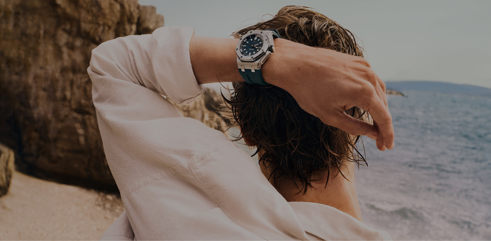
Cuando llega el verano, el tiempo se vive de otra manera: en escapadas, luz, mar,
movimiento y color. El Royal Oak Offshore 2026 lleva esa actitud al territorio
de la alta relojería
El verano invita a desconectar del ritmo habitual y a entrar en otro estado mental: más libre, más instintivo, más abierto al movimiento. En ese territorio se mueve el Royal Oak Offshore de Audemars Piguet, Manufactura suiza de Alta Relojería. Nacido con espíritu audaz y deportivo, el Offshore regresa en 2026 con nuevas interpretaciones que combinan colores vibrantes, materiales contemporáneos y calibres de Manufactura para expresar una forma distinta de vivir el tiempo: con precisión, carácter y energía propia.
El verano tiene
otro ritmo
Hay momentos del año en los que el tiempo deja de sentirse como una sucesión de horas. El verano es uno de ellos. Se mide en luz, en planes que surgen sin demasiada agenda, en la brisa antes de una salida al mar, en una tarde que se alarga y en esa necesidad casi física de apagar el ruido cotidiano.
Ese cambio de ritmo conecta con el espíritu del Royal Oak Offshore 2026: una invitación a apagar el ruido cotidiano, salir de lo previsible y vivir con más libertad, entendiendo la alta relojería desde una energía más abierta, más visual y más emocional.
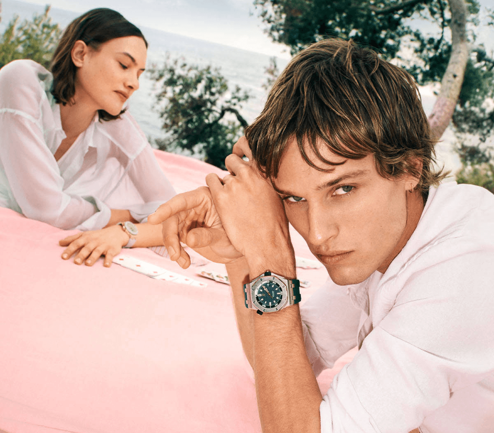
El tiempo
del verano
Cada verano trae consigo una nueva forma de mirar el mundo. Los días se alargan,
los planes se improvisan y el reloj deja de ser una obligación para convertirse
en un cómplice de la aventura.
El Royal Oak Offshore encarna esa energía como ningún otro. Su carácter rotundo
y su precisión mecánica lo convierten en un objeto de deseo capaz de acompañar
tanto una travesía en alta mar como una noche que no quiere terminar.
En 2026, la colección reafirma su vocación de icono contemporáneo, uniendo
tradición relojera y actitud desenfadada en una misma muñeca.
-
1993
Nace el Royal Oak Offshore
-
The beast
Proporciones imponentes, caucho visible y carácter provocador
-
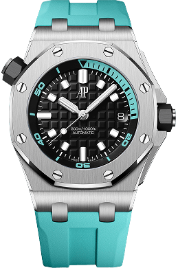
-
Icono
Alta relojería deportiva con espíritu propio
-
2026
Color, verano y actitud Offshore
El color como
declaración
En el Royal Oak Offshore 2026, el color no aparece como un simple acento estético. Es una forma de marcar carácter, de subrayar funciones y de llevar la alta relojería hacia un territorio más expresivo, más luminoso y más conectado con la energía del verano.
Rosa, turquesa, amarillo, azul claro, naranja o verde azulado recorren esferas, correas, escalas de medición, contadores y detalles luminiscentes. Cada tono aporta una lectura distinta del mismo espíritu Offshore: audacia, libertad, energía, horizonte y movimiento.
La colección convierte así el color en una declaración de actitud. Una manera de vivir el lujo con precisión técnica, pero también con emoción, personalidad y deseo de no pasar desapercibido. Descúbrela al completo en Audemars Piguet.
Seis postales cromáticas recorren la colección. En algunos modelos, el color domina la esfera y la correa; en otros, aparece como acento técnico en escalas, contadores, pulsadores o pespuntes. Rosa, turquesa, amarillo, azul claro, naranja y verde azulado construyen un mismo lenguaje: el de una alta relojería que este verano se expresa con libertad.
-
Audacia
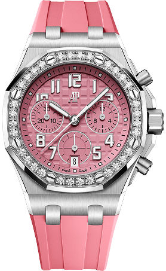
-
Libertad
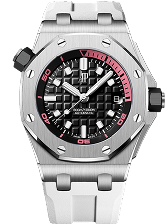
-
energía
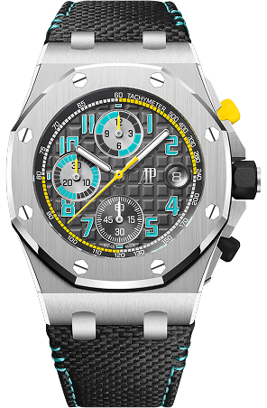
-
Horizonte
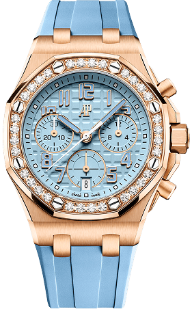
-
Profundidad
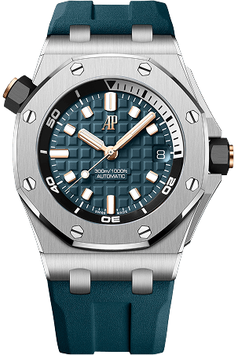
-
Movimiento
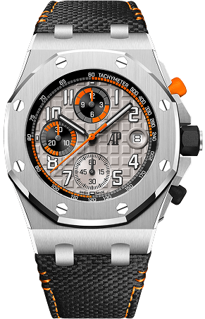
Tres formas de vivir
Offshore
La colección Royal Oak Offshore 2026 despliega su energía veraniega en tres direcciones. Tres familias, tres maneras de entender una misma actitud: salir de lo previsto, moverse con confianza y convertir el tiempo en una experiencia más intensa.
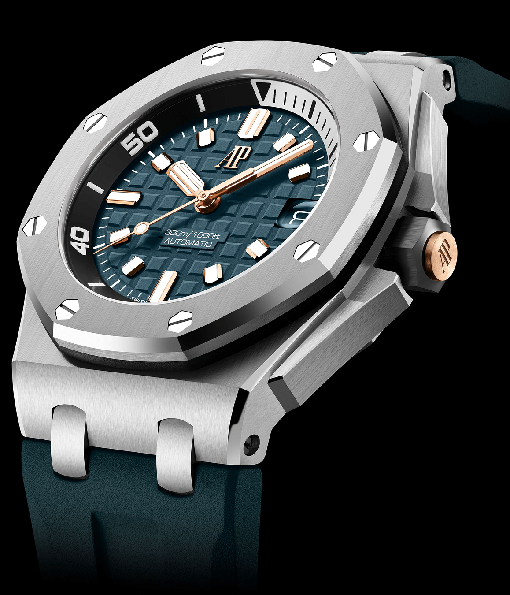
Diver 42 mm
Mar. Profundidad. Aventura.
El Royal Oak Offshore Diver lleva el espíritu Offshore al terreno de la exploración. Con caja de acero inoxidable, correas de caucho intercambiables y hermeticidad hasta 300 metros, sus nuevas versiones juegan con detalles en rosa, turquesa y verde azulado para conectar con un verano de mar abierto, deporte y aventura.
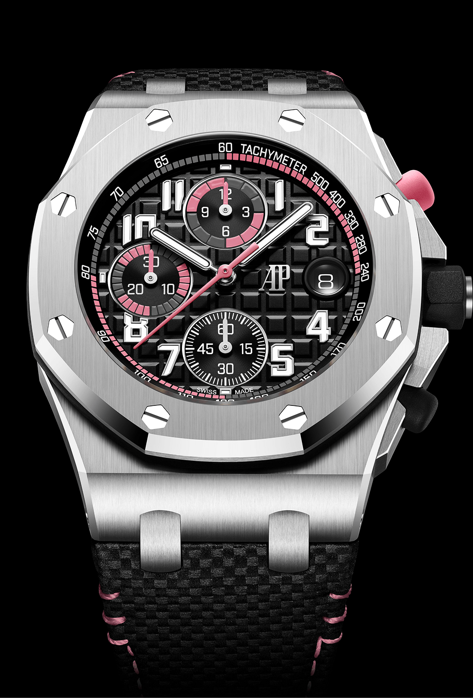
Royal Oak
Cronografo 42mm
En los Royal Oak Offshore Cronógrafo Automático de 42 mm, el color subraya el carácter dinámico de la pieza. Rosa, amarillo, turquesa y naranja aparecen en escalas, contadores, pulsadores y pespuntes para reforzar la lectura deportiva del cronógrafo flyback, una función que permite reiniciar una medición de tiempo al instante, y proyectar la potencia visual de “La Bestia” hacia 2026.
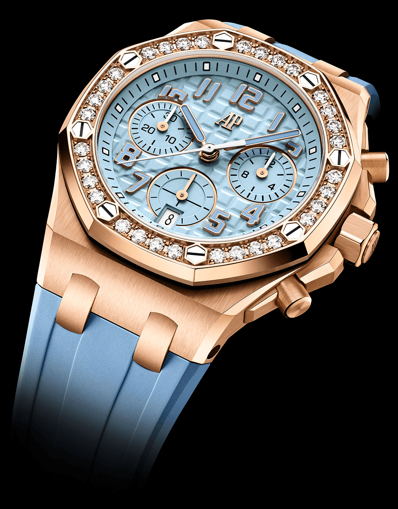
Chronograph 37 mm
Expresión. Versatilidad. Diseño.
Más compacto y refinado, el Royal Oak Offshore Cronógrafo Automático de 37 mm abre una lectura más versátil del icono. Titanio, oro rosa, diamantes, caucho y tonos como el turquesa, el rosa o el azul claro conviven con el calibre 6401, visible en esta línea a través del fondo de zafiro.
La técnica
detrás de la actitud
El Royal Oak Offshore 2026 juega con el color, pero no se queda en la superficie. Bajo esa estética vibrante late el savoir-faire de Audemars Piguet: calibres automáticos de Manufactura, arquitectura relojera visible a través del fondo de zafiro y acabados concebidos para revelar la precisión que sostiene cada gesto.
En los Diver de 42 mm, el calibre 4308 aporta robustez y 60 horas de autonomía mínima, en piezas herméticas hasta 300 metros. En los cronógrafos de 42 mm, el calibre 4404 incorpora la función flyback y alcanza 70 horas de autonomía mínima. Y en los cronógrafos de 37 mm, el calibre 6401 introduce una nueva generación de movimiento automático integrado, visible por primera vez en esta línea Offshore a través del fondo de zafiro.
La actitud Offshore se expresa en el color, el caucho, el titanio o el oro rosa. Pero también en aquello que solo se descubre al mirar más de cerca: masas oscilantes de oro rosa de 22 quilates, visibles a través del fondo de zafiro y encargadas de dar vida al movimiento automático; acabados refinados y una mecánica pensada para acompañar cada gesto con precisión.
Hay veranos que se recuerdan como una secuencia de postales: una embarcación recortada sobre el azul de la Costa Azul, un grupo de amigos en un muelle, tablas de paddle junto a la orilla, sombrillas rayadas frente al mar y esa luz turquesa que transforma el paisaje y el estado de ánimo.
Royal Oak Offshore 2026 acompaña cada momento, cada sensación. Un verano vivido entre movimiento, desconexión y energía compartida, donde la alta relojería encuentra un nuevo lenguaje para expresar libertad, carácter y ganas de dejarse llevar por el momento.
Hay instantes que no se miden solo en horas, minutos y segundos. Se recuerdan por su luz, por su intensidad, por el color que dejan en la memoria.
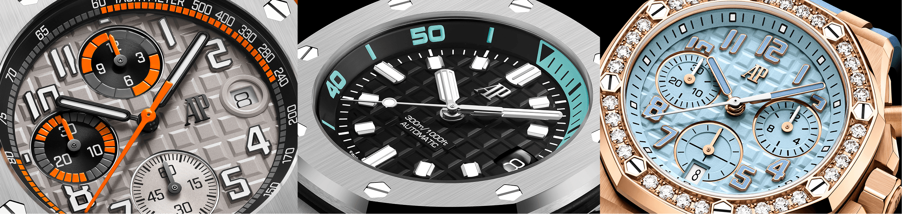
Con el Royal Oak Offshore 2026, Audemars Piguet convierte el tiempo del verano en energía: una invitación a moverse, expresarse y vivir la alta relojería con libertad, precisión y actitud Offshore.
Coordinación: Andrea Valladolid |
Diseño y front-end: Alejandra Santander |
Redacción: Alejandra Muñoz |
Fotografía: Audemars Piguet, Unsplash. |
Un proyecto de Brandslab. Godó Nexus.